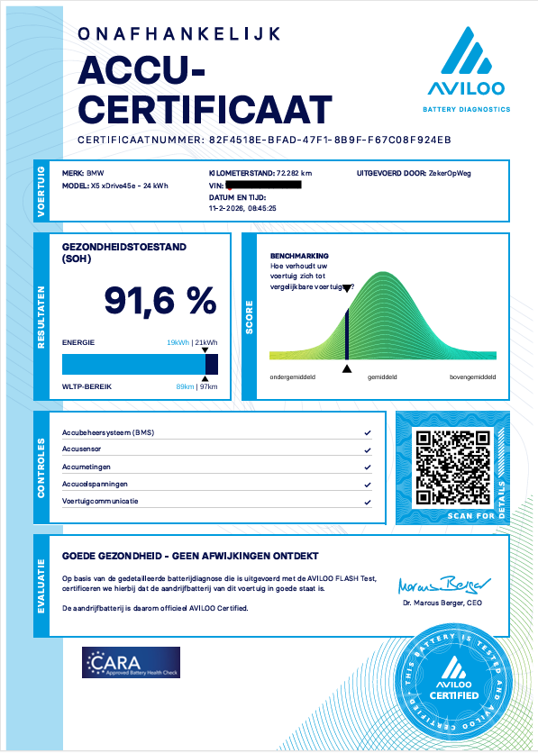

Plug-in hybride kopen?
Controleer eerst de accu.
De PHEV-accu slijt sneller dan u denkt. Tijdens de proefrit merkt u niets, want de verbrandingsmotor compenseert altijd. Achteraf wel: lager elektrisch bereik, hogere brandstofkosten en een accuvervanging van €4.000 tot €18.000.
- ✓ Celanalyse op celniveau. Detecteert slijtage die de boordsystemen verbergen.
- ✓ TUV-gecertificeerd accucertificaat. Dezelfde dag beschikbaar.
- ✓ Meer dan 50 PHEV-modellen ondersteund. Op locatie bij de auto.
Het risico bij een tweedehands PHEV
Waarom de accu het belangrijkste is bij een plug-in hybride
Een plug-in hybride heeft twee aandrijflijnen. De elektrische motor en de verbrandingsmotor. Bij een tweedehands PHEV koopt u altijd beide, maar de accu is de enige die u niet kunt beoordelen tijdens de proefrit.
De verbrandingsmotor neemt het over zodra de accu leeg is. De auto rijdt gewoon door. U merkt niets. Maar het elektrisch bereik dat op papier 50 of 60 kilometer is, blijkt in de praktijk nog maar 30 of 35 kilometer. En dat scheelt structureel brandstof en rijplezier.
Erger: een accu die onder de ADAC-norm presteert, verliest direct waarde. Bij doorverkoop is dat zichtbaar. Bij aankoop nog niet, tenzij u laat meten.
De verbrandingsmotor compenseert altijd. U merkt accudegradatie nooit tijdens de proefrit. Alleen een onafhankelijke meting maakt het zichtbaar.

ADAC-normen plug-in hybride
Wanneer is de accu van een PHEV nog goed?
De ADAC hanteert minimumwaarden voor accugezondheid per kilometerklasse. ZekerOpWeg hanteert deze normen als referentie bij elke AVILOO-meting.
| Kilometerstand | Minimum SoH volledig elektrisch | Minimum SoH plug-in hybride |
|---|---|---|
| 0 tot 25.000 km | 93% | 90 tot 93% |
| 25.000 tot 50.000 km | 91% | 88 tot 90% |
| 50.000 tot 100.000 km | 88% | 85 tot 88% |
| 100.000 tot 150.000 km | 86% | 83 tot 85% |
| 150.000 km en meer | 84% | 80 tot 83% |
Bron: ADAC. Waarden per model kunnen licht afwijken. ZekerOpWeg hanteert deze normen als richtlijn.
Een PHEV die onder de ADAC-norm presteert heeft bij een vraagprijs van €35.000 gemiddeld €2.000 tot €5.000 minder waarde dan de vraagprijs suggereert. Dat is objectief aantoonbaar met een AVILOO Flash Test.
Eigen praktijkmeting
BMW X5 xDrive45e · 72.000 km · SoH 91,6%
Dit is een eigen AVILOO-meting uitgevoerd door ZekerOpWeg. De BMW X5 xDrive45e met 72.000 kilometer. SoH 91,6%. Ruim boven de ADAC-norm van 88% bij dit kilometerstand.
Het certificaat toont de SoH-score, de benchmark ten opzichte van vergelijkbare voertuigen, de energie-inhoud en het WLTP-bereik. Dezelfde dag digitaal beschikbaar.
ZekerOpWeg is de uitvoerende partij. Het certificaat wordt afgegeven door AVILOO en gecertificeerd door TUV Austria.
AVILOO Batterijgarantie inbegrepen
Bij in aanmerking komende voertuigen automatisch inbegrepen na een geslaagde Flash Test. Geen extra kosten. Actief in Nederland vanaf 1 juli 2025.

Ondersteunde modellen
Meer dan 50 plug-in hybrides ondersteund
AVILOO ondersteunt alle gangbare PHEV-modellen. Stuur het kenteken via WhatsApp om te controleren of uw model beschikbaar is.
BMW
X3 xDrive30e
12 kWh
BMW
X5 xDrive45e
24 kWh
BMW
X5 xDrive50e
29,5 kWh
Audi
Q5 55 TFSIe
17,9 kWh
Audi
Q3 45 TFSIe
13 kWh
Volvo
XC60 Recharge
18,8 kWh
Volvo
XC90 Recharge
18,8 kWh
Mercedes
GLE 350e
31,2 kWh
Volkswagen
Passat GTE
13 kWh
Skoda
Octavia iV
13 kWh
SEAT
Leon e-Hybrid
12,8 kWh
Porsche
Cayenne E-Hybrid
25,9 kWh
Staat uw model er niet bij? Stuur het kenteken via WhatsApp. In de meeste gevallen is meting mogelijk.
Op locatie bij de auto
Bij u thuis, op het werk of bij het autobedrijf. U hoeft de auto niet te verplaatsen.
TUV-gecertificeerd certificaat
Dezelfde dag digitaal beschikbaar. Erkend door BOVAG. Bruikbaar als onderbouwing bij onderhandeling.
Batterijgarantie inbegrepen
Bij in aanmerking komende voertuigen automatisch. 1 jaar, 20.000 km, tot €3.000 compensatie.
Hoe de AccuCheck verloopt


De volledige meting duurt 15 tot 20 minuten. U hoeft de auto niet te verplaatsen. Alles wordt op locatie uitgevoerd.
Veelgestelde vragen
Alles over de accu van een plug-in hybride
Waarom is een accucheck extra belangrijk bij een plug-in hybride?
De accu van een plug-in hybride is kleiner dan bij een EV maar wordt intensiever gebruikt. De auto laadt, ontlaadt en laadt via remenergie continu. Dat zijn meer laadcycli dan bij een EV bij vergelijkbare kilometerstand. Slijtage is daardoor often hoger. En u merkt niets tijdens de proefrit, want de verbrandingsmotor neemt het over.
Hoe weet ik of de accu van een tweedehands plug-in hybride nog goed is?
Niet via een proefrit. Niet via de boordsystemen. Alleen via een onafhankelijke meting. ZekerOpWeg voert een AVILOO Flash Test uit op celniveau. U ontvangt dezelfde dag een TUV-gecertificeerd accucertificaat met SoH-score en benchmark.
Wat is een goede SoH voor een plug-in hybride?
De ADAC hanteert als richtlijn: bij 25.000 km minimaal 90 tot 93%, bij 50.000 km minimaal 88 tot 90%, bij 100.000 km minimaal 85 tot 88%. Een PHEV onder de norm heeft aantoonbaar minder elektrisch bereik en een lagere restwaarde.
Wat kost accuvervanging bij een plug-in hybride?
Afhankelijk van het model tussen de €4.000 en €18.000. Voor grote modellen zoals de BMW X5 xDrive50e of Porsche Cayenne E-Hybrid loopt dit op tot €20.000. Een AVILOO Flash Test via ZekerOpWeg kost €129.
Merkt een koper iets van accudegradatie bij een plug-in hybride?
Vrijwel nooit tijdens de proefrit. De verbrandingsmotor compenseert het verlies automatisch. Het enige zichtbare effect is een lager elektrisch rijbereik en hogere brandstofkosten. Pas na de aankoop wordt duidelijk dat de actieradius op elektriciteit tegenvalt.
Welke plug-in hybrides ondersteunt AVILOO?
Meer dan 50 modellen, waaronder BMW X3 30e, BMW X5 45e en 50e, Audi Q5 TFSIe, Audi Q3 TFSIe, Volkswagen Passat GTE, Skoda Octavia iV, Seat Leon e-Hybrid, Volvo XC60 Recharge, Volvo XC90 Recharge, Mercedes GLE 350e en Porsche Cayenne E-Hybrid.
Kan ik de AccuCheck combineren met aankoopadvies?
Ja. ZekerOpWeg biedt een combinatiepakket aan waarbij bezichtiging en AVILOO Flash Test in een bezoek worden uitgevoerd. Premium plus AccuCheck kost €449. Full Service plus AccuCheck kost €599. Inclusief TUV-certificaat en AVILOO Batterijgarantie.
De accu bepaalt de waarde van een plug-in hybride.
Stuur het kenteken.
Ik meet vandaag nog.
Heeft u een plug-in hybride gevonden die u wilt kopen? Stuur het kenteken via WhatsApp. ZekerOpWeg voert de AVILOO Flash Test uit op locatie bij de auto.
Plan AccuCheck · €129Of bekijk het aankoopadvies inclusief AccuCheck vanaf €449
Gerelateerde pagina's
Meer lezen
EV AccuCheck
EV AccuCheck op locatie
Gecertificeerde AVILOO Flash Test voor volledig elektrische auto's en plug-in hybrides.
Vergelijking
AVILOO vs Moba
Waarom celanalyse meer zegt dan een SoH-percentage. Onderbouwd met praktijkdata.
Modelpagina
BMW X5 45e en 50e AccuCheck
Specifieke informatie over accudegradatie en meting van de BMW X5 plug-in hybride.
Aankoopadvies
Onafhankelijk aankoopadvies
Bezichtiging en AccuCheck in een bezoek. Vanaf €449 inclusief AVILOO Batterijgarantie.